Assignment 2: Discover and prepare Lakeshore data in OneLake
Assignment 1: MySQL · Assignment 2: OneLake · Assignment 3: Inventory · Assignment 4: Semantic lifecycle · Assignment 5: Ontology
Lakeshore's operations team needs shared product, location and stock records, not separate copies in each analyst's computer. In Assignment 1 you designed and queried product/location tables in MySQL. Now you will bring the same source records into a Fabric lakehouse, discover them through the OneLake catalog, reference a table with a shortcut, and check the data with SQL and a visual query.
This is Assignment 2 of the five-assignment Lakeshore Retail progression. Keep the resources: Assignment 3 builds an inventory dimensional model from them, Assignment 4 validates and deploys a semantic model, and Assignment 5 uses the operational tables in an ontology.
Part 1: Create your workspace and identify the inputs
You need a learning account, permission to create workspaces and a Fabric-capable paid or trial capacity supplied by your instructor. Workspace access alone is not capacity. Do not buy capacity or alter tenant settings as part of this lab.
- Open Microsoft Fabric and sign in with your learning account.
- Select Workspaces > New workspace. Give it a unique name such as
LakeshoreProgressionDev-yourname. In Advanced, select the available Fabric-capable workspace type and the capacity specified by your instructor. Select Apply. - Keep this new workspace for Assignments 2–5. If you cannot create it or select the required capacity, ask your instructor or administrator. Administrator setup is not a learner task.
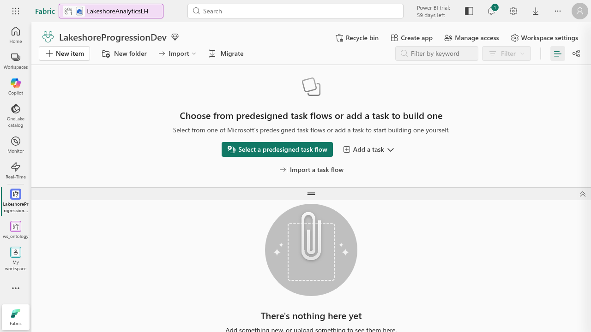
Download the eight Lakeshore files. This assignment loads six static CSV files: dimlocations.csv, dimproducts.csv, dimsuppliers.csv, dim_refrigeration_units.csv, fact_inventory_positions.csv and factshipments.csv. Keep refrigeration_telemetry.csv for the Eventhouse in Assignment 5, and SalesReport.pbix for its sales semantic model. Neither is another static lakehouse table in this task.
Use the supplied CSVs, not a MySQL export or an unrelated sales.csv. Product/location identifiers match Assignment 1. Sample operational times are in August 2026; they are fixed training data, not current inventory.
Part 2: Load the Lakeshore static data
- In your workspace, select + New item > Lakehouse. Name it
LakeshoreStaticDataLH. Keep Lakehouse schemas selected and choose Create. - Open Home > Get data > Upload files. Select the six static CSVs and Upload. Wait for completed status and nonzero size. Do not overwrite existing files.
- Open Files and preview dimlocations.csv. Confirm the first record is Seattle Market and the header begins LocationId, LocationType, Name.
- For each file, select its ... menu > Load to Tables > New table. Use schema dbo and the file's base name as the table name. Keep Use header for column names checked and Separator as comma. Select Load.
- Wait for that table job to finish before starting the next one. The current UI rejects simultaneous table-load requests with a message asking you to wait.
- Open each table preview. Confirm real column names and the counts below. If you see _c0 or a header as the first record, stop: the header setting was wrong.
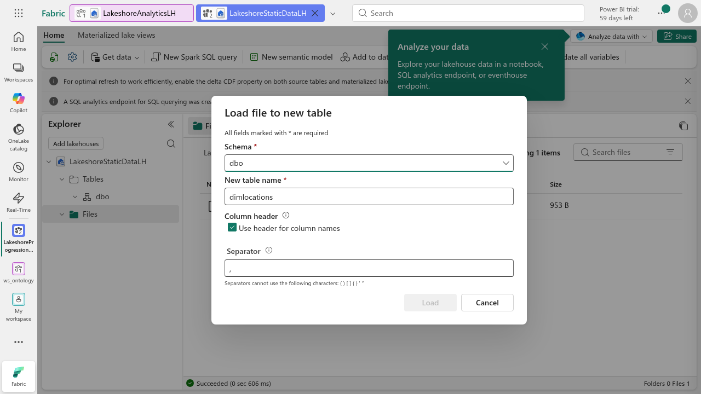
| Table | Expected rows | Business role |
|---|---|---|
| dimlocations | 9 | 6 stores and 3 distribution centers |
| dimproducts | 8 | Product storage rules and standard prices/costs |
| dimsuppliers | 4 | Supplier context |
| dim_refrigeration_units | 12 | Equipment assigned to stores |
| fact_inventory_positions | 48 | One stock snapshot row per store/product |
| factshipments | 8 | Inbound shipment status |
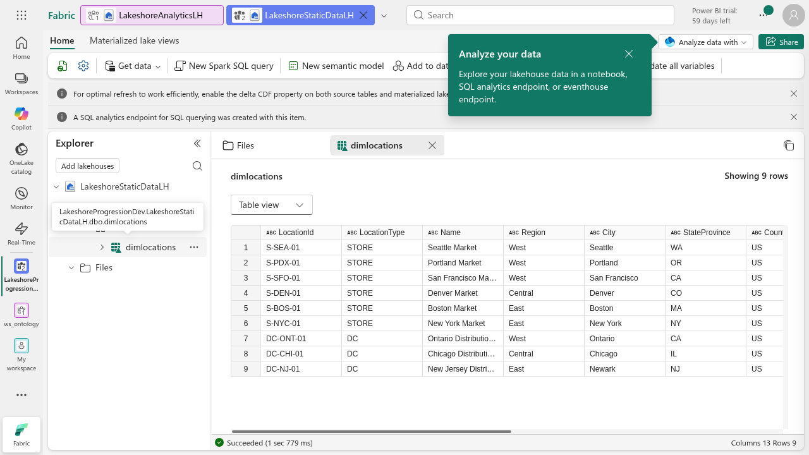
The Files area holds source files. Tables holds managed Delta tables produced from them. Loading a CSV creates a table; simply uploading it does not. Open a table's Table view dropdown and select File view to inspect its Parquet data and _delta_log. Record what each represents.
Reference-run recovery: One first shipment load mistakenly used the header as a record, yielding 9 rows. It was preserved for review. The same CSV was loaded again into factshipments_verified with the header checked, producing 8 rows with named fields. If you encounter this, verify a separately named corrected table before using it downstream. Do not silently include a header in totals or delete earlier work.
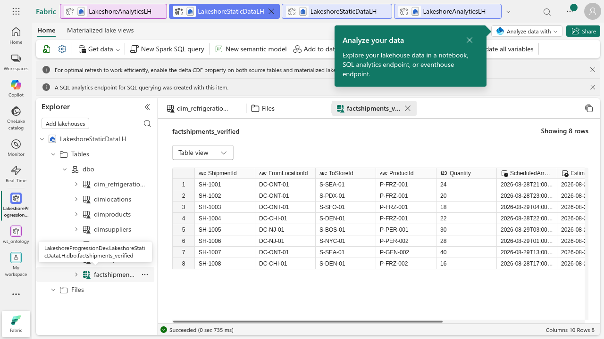
Part 3: Discover the data and use a shortcut
- Select OneLake catalog in the left navigation. In Explore, choose your workspace, keep Type: Data items and filter for LakeshoreStaticDataLH.
- Identify the lakehouse's owner, type and workspace. Expand its row to see the associated SQL analytics endpoint. The catalog only shows items you can access; absence is not evidence that no data exists.
- Select Open to return to the lakehouse. Compare the original file header with the inferred table types.
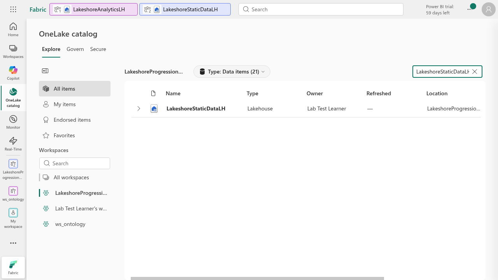
- Return to the workspace and create a second lakehouse named
LakeshoreAnalyticsLH. It represents the analyst's consumption layer. Use the same workspace in this lab; a cross-workspace shortcut uses the same concept but requires permission in both workspaces. - In the new lakehouse select Get data > New table shortcut > Microsoft OneLake. Search for LakeshoreStaticDataLH and verify its workspace before selecting it. Do not select another lakehouse with the same name.
- Select Next. If Connection method appears, retain Passthrough identity and select Connect. This uses each user's existing access; the shortcut does not grant source access.
- Expand Tables > dbo. Select the checkbox beside dimproducts and Next. Review the name, source and destination, then Create.
- Open the shortcut table. Confirm 8 rows and the same product identifiers as the source. Explain why a shortcut references data rather than making an independent CSV copy.
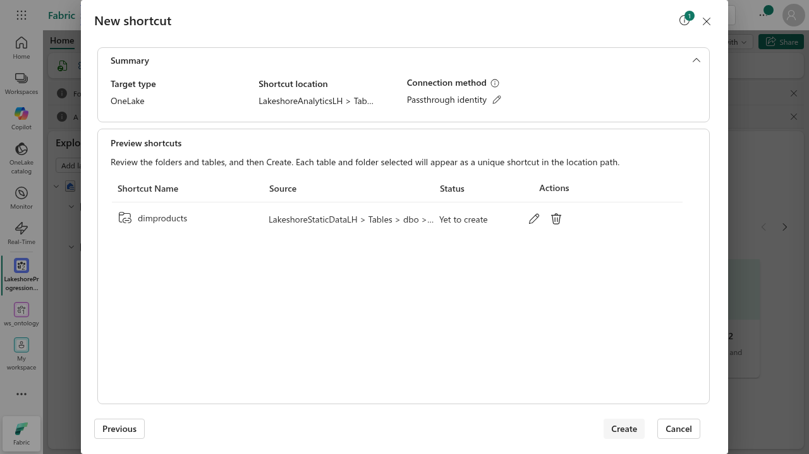
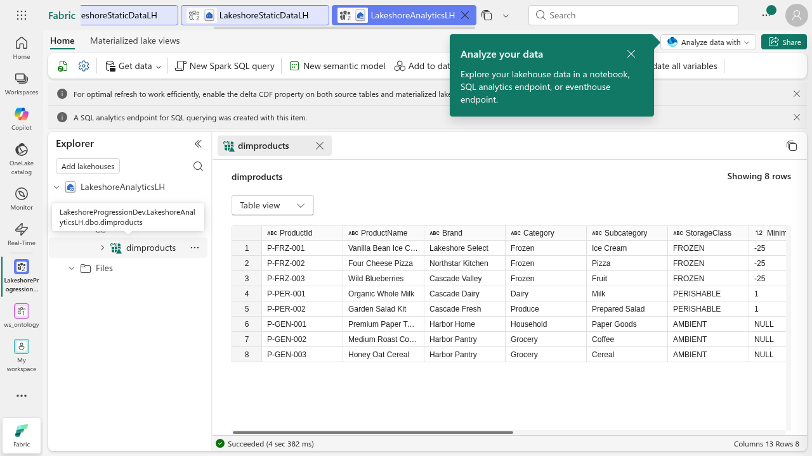
Checkpoint: Six source files, six Delta tables, catalog discovery and one functioning table shortcut. No source files or earlier workspace results have been deleted.
Part 4: Verify with SQL and a visual query
- In LakeshoreStaticDataLH select Analyze data with > SQL analytics endpoint. In this verified UI the endpoint is under Analyze data with, not the older Lakehouse/SQL dropdown.
- Select New SQL query. Run the downloaded Lakeshore SQL checks one statement at a time. Inspect the text before Run. Compare all six counts with Part 2.
- Check the inventory totals: 48 rows, 6 stores, 1,738 on-hand units, 281 inbound units and 3 rows where OnHandQuantity is below ReorderPointQuantity.
- Run the duplicate-grain check. It should return no rows for StoreId + ProductId + SnapshotDateTime. Why would duplicate snapshots inflate the totals?
- Compare the product StorageClass counts with Assignment 1: AMBIENT 3, FROZEN 3, PERISHABLE 2.
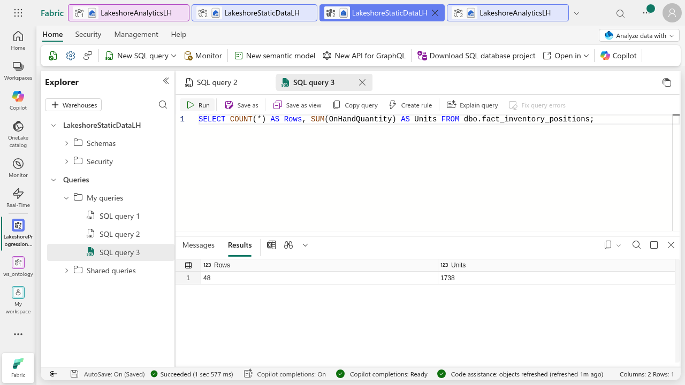
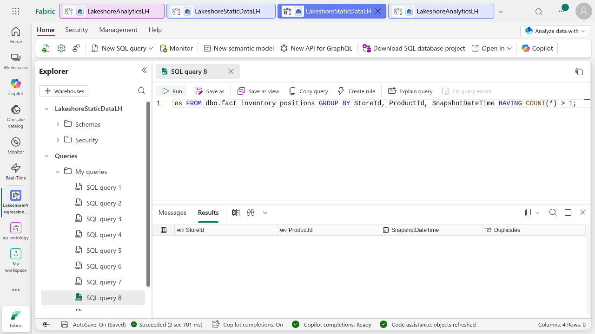
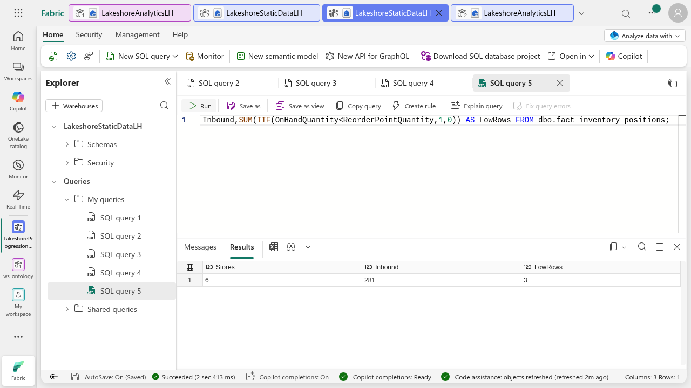
This endpoint queries lakehouse tables. Do not try the MySQL INSERT or UPDATE exercise here. Inventory quantities are units, not sales revenue. StandardUnitCost represents cost, not a customer's sale price.
- Open the dropdown beside New SQL query and select New visual query.
- Expand Schemas > dbo > Tables. Drag dimproducts into the visual-query canvas and wait for its 8-row preview.
- Select Transform > Group by. There is no need to remove other columns before a Count rows grouping.
- Use Basic: Group by StorageClass, New column name ProductCount, Operation Count rows. Select OK and wait for Completed.
- Compare the three visual-query results with the SQL counts. The transformation belongs to the query; it has not changed the source product table.
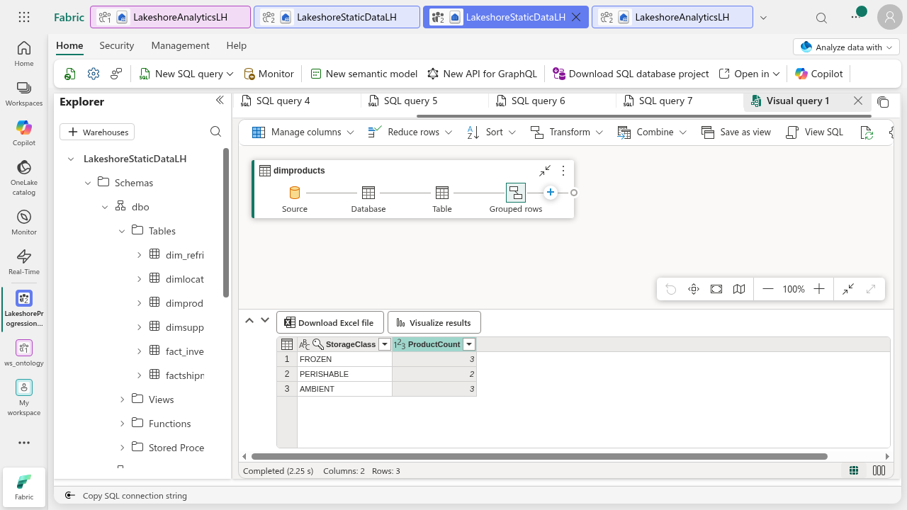
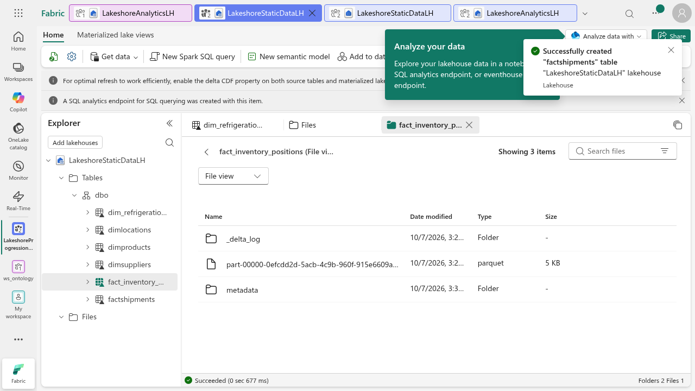
Part 5: Create a small semantic model for exploration
This first model is a product catalog exploration, not the final inventory star model. Assignment 3 supplies that dimensional design; Assignment 4 adds model-quality and deployment work.
- In the source SQL analytics endpoint select New semantic model. Name it
LakeshoreCatalogExplore, select your new workspace, keep Direct Lake on SQL, and select only dbo.dimproducts. - Confirm the product checkbox is visibly selected and Confirm is enabled. Select Confirm once, then wait for the model to appear in the workspace.
- Open the semantic model and inspect its dimproducts fields. Compare its ProductId and StorageClass fields with the source table.
- In the model editor Home ribbon select Explore (Explore this data, preview). Dismiss the introduction with Got it. In Choose data search StorageClass and select it. In Rearrange data, use Columns > Add data and select ProductId. Close the field popup. Inspect the product identifiers by storage class in the matrix and detail visual. Compare them with the source. The counted comparison is the tested visual query in Part 4; this exploration is not a numeric measure or a revenue chart.
- If Explore this data is unavailable in your account's current UI, record the missing option and capture the model fields plus the visual-query results instead. Ask the instructor whether a report visual is required. Do not change tenant settings to reveal an option.
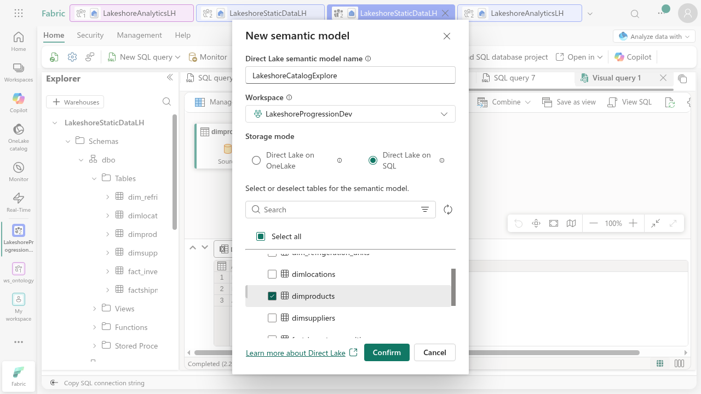
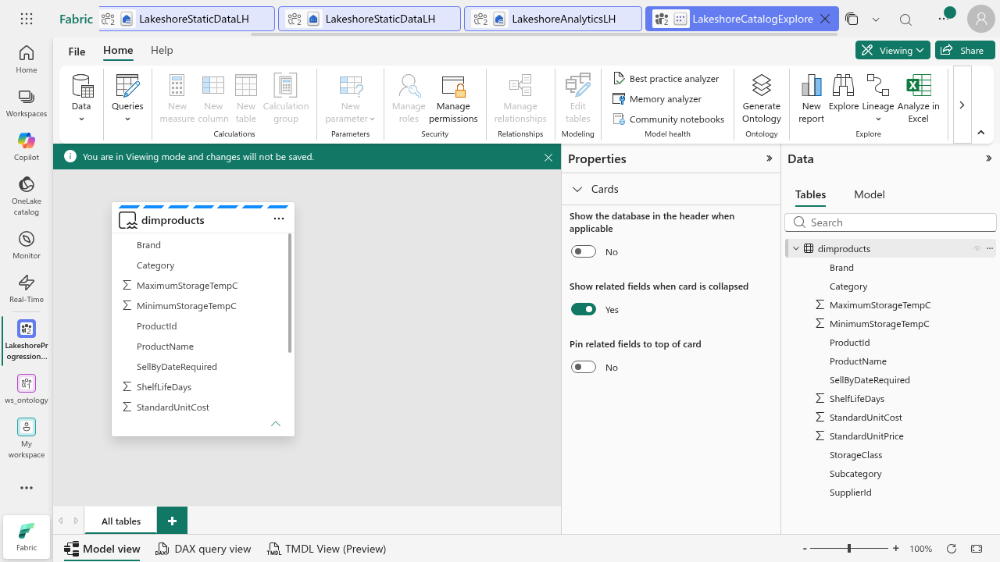
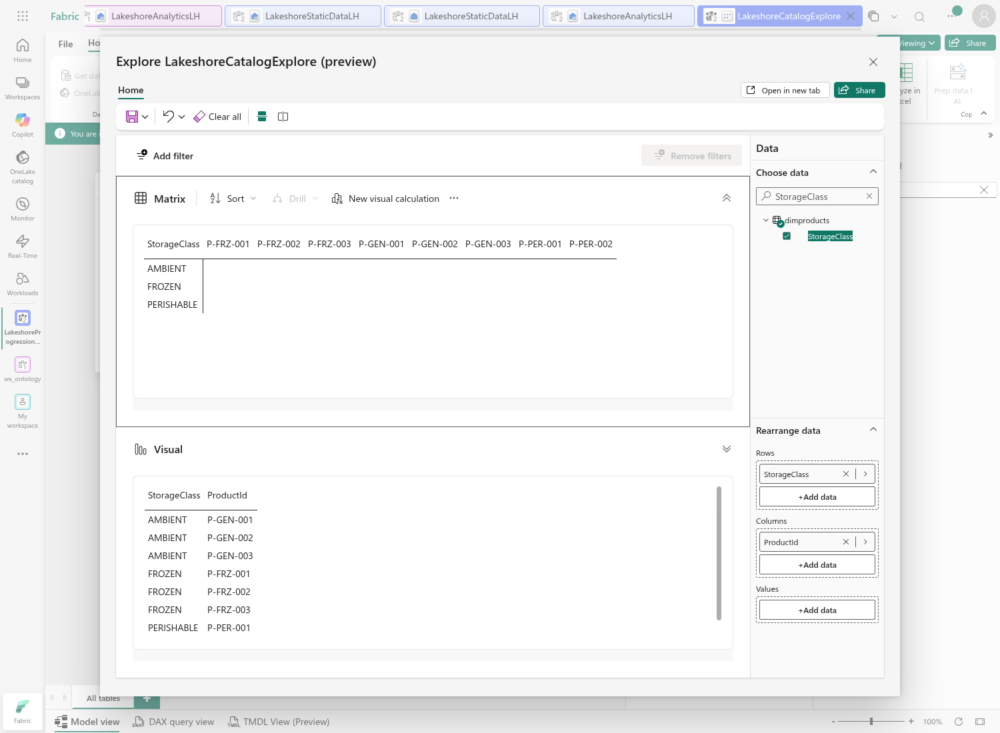
Part 6: Submit and retain the environment
- Submit the catalog screenshot with your correct workspace and item, original Files list, six table counts, Delta File view and functioning shortcut.
- Submit your SQL checks with results and an explanation of the inventory grain and below-reorder count.
- Submit the visual-query steps/results and semantic-model field evidence and exploration visual.
- Explain the difference between source CSV files, managed Delta tables, a shortcut, a read-only SQL analytics endpoint and a semantic model.
- Keep all resources for Assignment 3 and review. Do not perform the source labs' optional workspace deletion.
Source and verification notes
This assignment combines Discover and connect to data in OneLake and Create a Microsoft Fabric Lakehouse, using the canonical Lakeshore files rather than sales.csv. Tested October 7, 2026: workspace/lakehouse creation, file upload, table loading, OneLake discovery, passthrough product shortcut, Delta file view, SQL inventory checks and visual-query grouping, duplicate-grain check (0 rows), Direct Lake model creation and field exploration. Learners must create their own evidence. The reference run retains earlier lab resources rather than deleting workspaces.